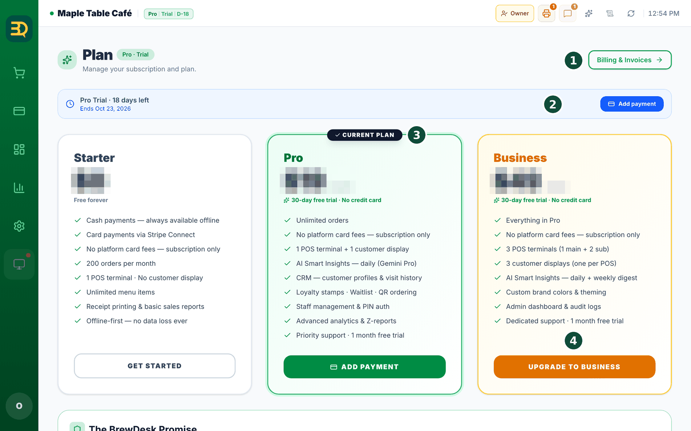
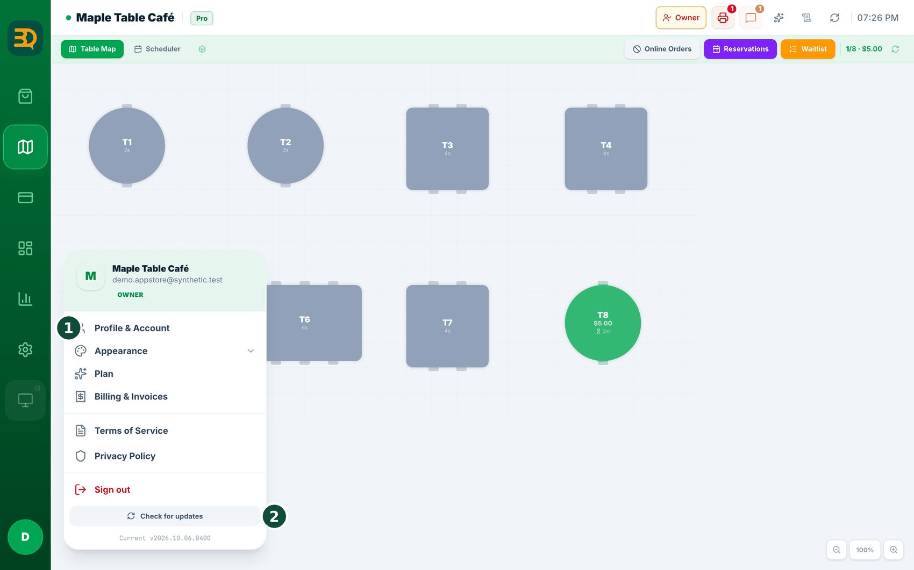
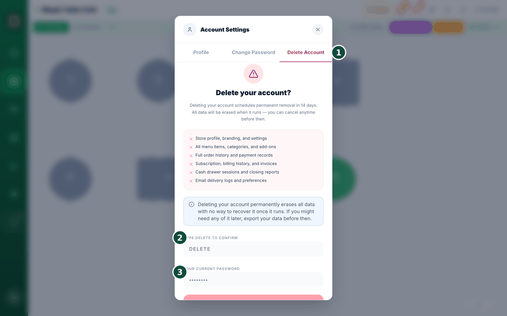
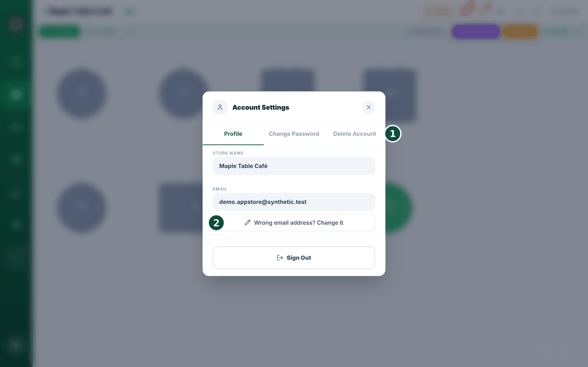
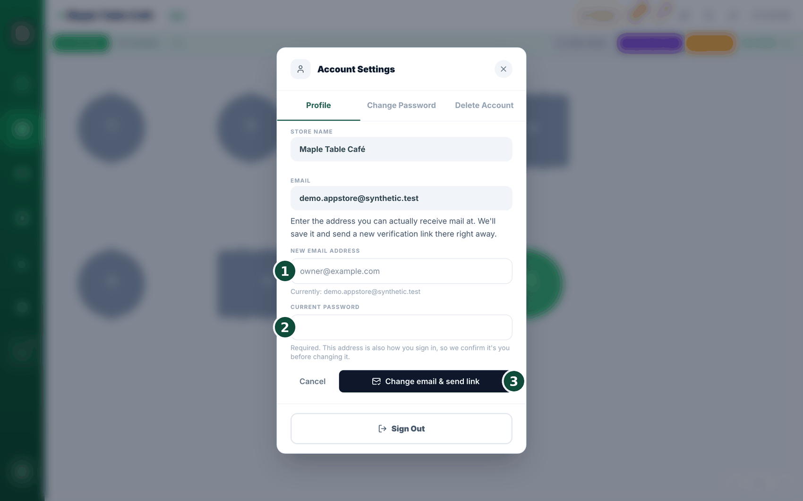

13플랜 & 결제
플랜은 사용하는 BrewDesk의 등급입니다. 무료로 시작하여 나중에 상위 플랜으로 올릴 수 있으며, 모든 설정은 한 곳에서 관리합니다.
- 무료인 Starter 플랜을 계속 사용할 수 있습니다.
- 또는 Pro나 Business를 한 달 동안 무료로 체험할 수 있습니다. 체험을 시작할 때 신용카드는 필요하지 않습니다.
- 계속 사용하기로 결정하면 결제 수단(카드 등)을 추가합니다.
- 플랜, 결제 카드, 청구서를 확인하려면 Billing으로 이동합니다.
- 가격은 이용하시는 국가에 맞게 책정됩니다.

계정 삭제
가게를 접거나 BrewDesk 사용을 중단하기로 했다면 계정을 삭제할 수 있습니다. 삭제를 요청해도 즉시 사라지지 않으며, 14일 뒤에 실행되고 그 전에는 언제든 되돌릴 수 있습니다.
오른쪽 위 계정 메뉴에서 계정 설정을 열고 "Delete Account"(계정 삭제) 탭을 누릅니다. 사장님만 진행할 수 있습니다.
- 삭제되는 항목의 목록을 확인합니다 — 매장 정보, 메뉴, 주문·결제 기록, 구독과 청구서, 마감 리포트까지 전부 포함됩니다.
- 필요한 자료가 있으면 먼저 "Export data"(데이터 내보내기)로 받아 두어 주세요. 실행된 뒤에는 되돌릴 방법이 없습니다.
- 확인란에 DELETE를 대문자로 입력합니다.
- "Send verification code"(인증 코드 보내기)를 누릅니다. 사장님 이메일로 6자리 코드가 발송됩니다.
- 메일에서 코드를 확인하여 입력합니다. 그러면 버튼에 실제 날짜가 표시되며(예: "8월 14일에 계정 삭제"), 이 버튼을 누르면 예약이 완료되고 자동으로 로그아웃됩니다.


알아두기: 삭제 요청·취소 기록은 안전을 위해 별도로 보관됩니다. "내가 삭제하지 않았는데"와 같은 상황이 생겨도 확인할 수 있습니다.
로그인 이메일 변경
가입할 때 이메일을 잘못 입력했다면 인증 메일이 사장님이 열 수 없는 주소로 발송되고 있는 것입니다. 재발송을 눌러도 같은 틀린 주소로 다시 발송될 뿐입니다. 이제 주소 자체를 직접 수정할 수 있습니다.
오른쪽 위 계정 메뉴 → 계정 설정(Account Settings) → Profile 탭 → "이메일 주소가 틀렸나요? 주소 변경"(Wrong email address? Change it). 사장님(오너) 계정만 진행할 수 있습니다.
- "이메일 주소가 틀렸나요? 주소 변경"을 탭합니다. 현재 등록된 주소가 함께 표시되므로 어느 부분이 잘못되었는지 직접 확인할 수 있습니다.
- 새 이메일 주소를 입력합니다 — 실제로 메일을 받을 수 있는 주소여야 합니다.
- 현재 비밀번호를 입력합니다. 필수 항목입니다. 이 주소는 로그인 아이디이기도 하므로 변경 전에 본인 확인을 진행합니다.
- "주소 변경 후 링크 보내기"(Change email & send link)를 탭합니다. "저장했습니다. … 로 인증 링크를 보냈어요 — 그 링크를 누르면 잠금이 풀립니다."라는 문구가 나타납니다.
- 메일함을 열어 링크를 누르면 완료됩니다.


총판 연결 · 해제
매장을 동네 총판이나 대리점이 설치해 주고, 이후에도 메뉴와 설정을 대신 관리해 주는 경우가 있습니다. 이 경우 현재 누가 해당 권한을 가지고 있는지 직접 확인할 수 있으며, 원할 때 직접 연결을 해제할 수 있습니다.
오른쪽 위 계정 메뉴 → "Installer partner"(총판 연결). 사장님(오너) 계정만 보이고, 승인된 연결이 있을 때만 메뉴가 나타납니다 — 총판을 이용하지 않는 매장이나, 아직 승인하지 않은 요청만 있는 매장에는 메뉴가 없습니다.
- 메뉴를 열면 누가 언제부터 연결되어 있는지 표시됩니다 — "Connected since 2026년 2월 3일"(2026년 2월 3일부터 연결됨). 다른 총판의 요청이 승인을 기다리고 있다면 "승인 대기 중"과 요청한 날짜도 함께 표시됩니다.
- 연결을 해제하려면 이름 옆의 "Disconnect"(연결 해제)를 눌러 주세요.
- 확인 문구가 나타납니다 — "{총판}은(는) 이 매장에 즉시 접근할 수 없게 됩니다. 나중에 다시 승인할 수 있습니다."
총판이 사장님을 대신하여 매장 작업을 하는 동안에는 해당 화면에 총판 이름이 표시되고 활동 기록에도 작업자가 함께 남습니다. 따라서 "이 가격을 누가 변경했는가"에 대한 답을 항상 확인할 수 있습니다.